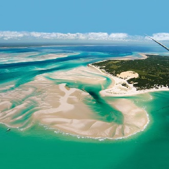

Bazaruto Archipelago, Mozambique
Situated 750 km off the mainland, the remote place is divine. The archipelago is barely touched by civilization. Only white sandy beaches and crystal clear water. Aficionados Jody MacDonald and Gavin McClurg were the paragliding pioneers here.

lalalala
lalalala

lalalala